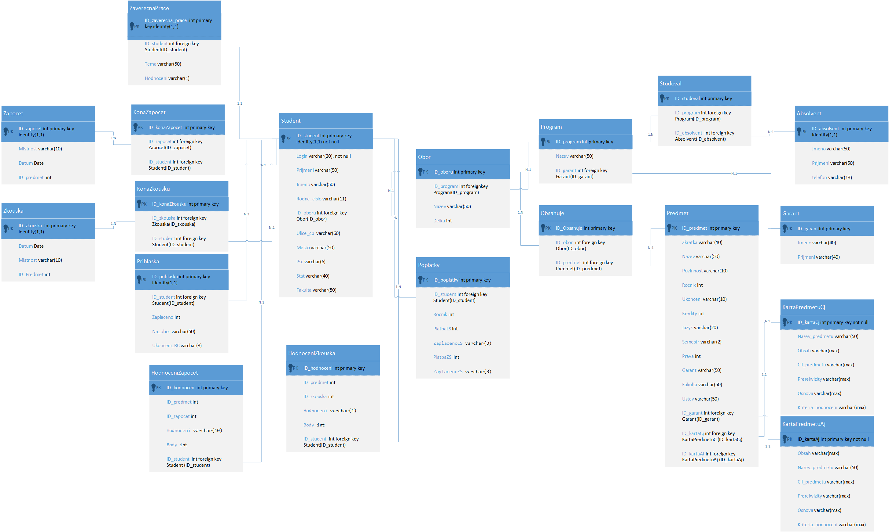

Databázový systém školy
SQL
Jedná se o projekt, ve kterém se řeší vytvoření databázového systému pomocí MS SQL Serveru ohledně celkového fungování studentů na fakultě - co se týče zápočtů, zkoušek, absolvování, poplatků apod.

Na obrázku je možné vidět E-R diagram vytvořené databáze. Databázový systém obsahuje psaný v SQL kódu obsahuje vytvoření jednotlivých tabulek a relací mezi nimi (PK, FK), vložení dat do jednotlivých tabulek, vytvoření triggerů, procedur a pohledů. Dále je také vyzkoušena funkčnost databáze. Dále důležitou součástí databází jsou i kurzory.